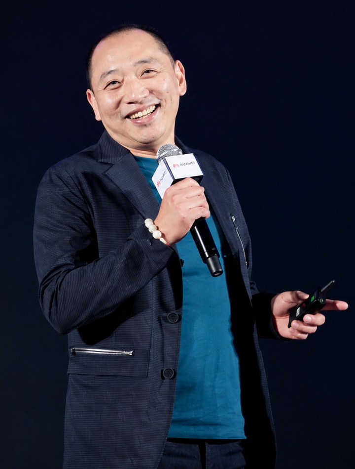

王涛的专栏从一个被反复回答、却始终答偏的问题起步：创业方法越来越精密，失败率为什么没有下降？他不从外部界定成败，而是转向发生学的内部视角——真本事与判断在创业过程中究竟是怎么发生的，又是在哪一步被堵死的？《免疫代理》《体知的消失》《代理性生成》三篇构成他最早的一份病因学：当创业者用外在框架替代身体化的直接经验，判断的行动来源就被抽空，于是有了那种典型的困境——知道，却做不到。
Wang Tao’s column starts from a question that has been answered many times and missed every time: as startup method grows ever more precise, why has the failure rate not fallen? Rather than judging success from the outside, he turns to genesis from within — how does real capability, real judgment, actually come about in a venture, and at which step is it blocked? His earliest three pieces form an etiology: when a founder substitutes an external framework for embodied, first-hand experience, the source of action behind judgment is hollowed out — hence the familiar predicament of knowing without being able to do.
此后几篇把同一诊断推进到组织层面：《被接管的手》《组织密度》《判断的悬置》追踪规模化过程中「决策退行」的发生机制；《决断的重力》问一个组织凭什么不被「正确」淹没；《代理性失语》命名了另一种沉默——不是不敢说，是说了、说得很专业、说完还很舒服，然后那句真正该刺痛人的话消失了。
Later pieces carry the same diagnosis into the organisation: three of them trace how decision-making regresses as a venture scales; another asks what keeps an organisation from being drowned by what is merely correct; and the most recent names a second kind of silence — not fear of speaking, but speech that is fluent, professional and comfortable, after which the one remark that should have stung is gone.
王涛，SDE 学员（入册第 24 位），研究方向为创业与组织的发生学。自 2026 年 7 月起在本栏发表，现有 15 篇，分布在经济与管理、社会学两个领域。
Wang Tao, an SDE trainee (24th on the register), works on the genesis of entrepreneurship and organisation. He has published in this column since July 2026, with 15 pieces to date across economics and management, and sociology.
他的稿件多以「小微企业与战略中心型组织」「论创业者领导力」这类原初问题成组产出，同一个诊断在一组四到八篇里换场景反复检验——这也是他这批文章互相咬合、又彼此划界的原因。
His submissions arrive in groups built on a single originating question — small firms and the strategy-centred organisation, or the leadership of founders — so that one diagnosis is tested across four to eight settings. That is why these pieces interlock while marking their borders against one another.
本节由编辑部依其发表记录整理；作者本人的自述尚未提供，如需更正或补充，请联系编辑部。
This section was compiled by the editors from the publication record; the author’s own account has not yet been supplied. Corrections and additions are welcome.
王涛的研究把创业失败作为一个认识论问题来重新诊断。主流创业研究多从外部界定成败，他却主张转向发生学的内部视角，追问创业过程中真正的能力与判断是如何发生、又如何被堵死的。在一组相互关联的论文中，他提出代理性生成、被跳过的发生、体知的消失、免疫代理等命名，构成一种关于创业发生性坏死的病因学。
他的核心判断是：创业真正死掉，从涌现被塑形堵死的那一刻就开始了。他以体知的消失论证精益创业方法如何制造出知道却做不到的执行困境——当创业者用外在框架替代身体化的直接经验，判断的行动来源就被抽空；以代理性生成、免疫代理揭示小微企业失败的一种新病理，即关键的发生环节被代理、被跳过，组织因此失去自我修复的能力。他主张创业认识论应从外在界定转向对发生条件与生态修复的关注。
他的方法把创业从成功学的语汇中解放出来，还原为一个能力与判断如何发生的过程问题。这使他能诊断出主流方法论看不见的病理：当发生被塑形堵死、被代理跳过，组织便失去了自我修复的活力。他守护的价值，是为真本事的发生留出空间，而非用外在框架把它提前填满。